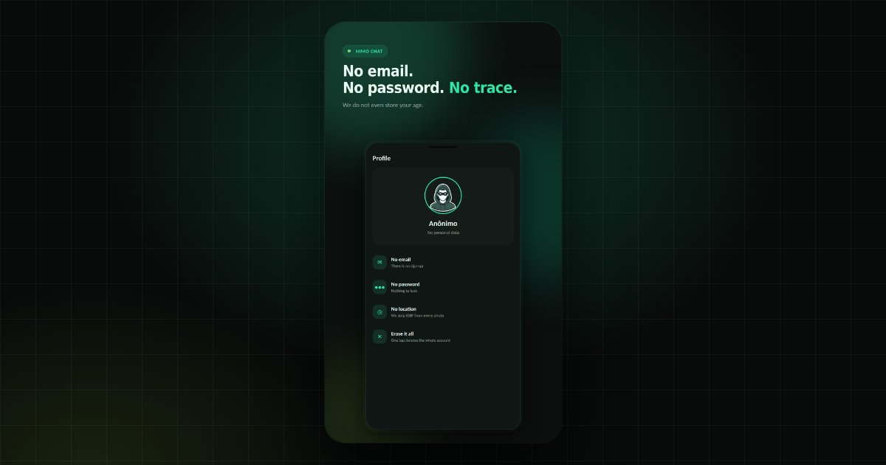

Las mejores alternativas a Omegle en 2026: qué hace realmente segura a una de ellas
Publicado el: 10 de septiembre de 2026

Si llegaste hasta aquí, probablemente intentaste entrar a Omegle y te encontraste con el aviso de "This service is no longer available" que está ahí desde 2023. No es un error tuyo: Omegle cerró de verdad y no va a volver.
Por qué cerró Omegle, en resumen
Omegle funcionó durante casi 14 años, conectando desconocidos por texto y video prácticamente sin ninguna barrera de por medio. Su fundador, Leif K-Brooks, cerró el servicio el 9 de noviembre de 2023, después de años de demandas por el mal uso de la plataforma, incluido un caso de una niña emparejada con un depredador que terminó en un acuerdo de 22 millones de dólares. En el comunicado de cierre, K-Brooks dijo que mantener la lucha contra el abuso "ya no era sostenible, ni financiera ni psicológicamente".
Esa historia importa aquí porque es exactamente el vacío que cualquier alternativa tiene que llenar. Un sitio que te deja hablar con un desconocido sin ninguna fricción es divertido; en el momento en que tampoco tiene moderación, deja de ser divertido para alguien.
Qué vale la pena buscar en un reemplazo
Antes de elegir la primera app que aparezca en la búsqueda, conviene revisar algunas cosas que separan "rehicieron Omegle" de "aprendieron de Omegle":
- Un botón de denuncia que funcione de verdad. No solo un formulario que desaparece en una cola: lo ideal es que el contenido se elimine automáticamente, no "algún día".
- Un bloqueo de verdad, no a medias. Después de bloquear a alguien, nunca más deberías coincidir con esa persona.
- Que no pidan correo, teléfono ni contraseña. Si no hay con qué registrarse, no hay nada que filtrar.
- Reglas claras contra menores de edad y contenido explícito, dichas desde el principio, no escondidas en una página de términos que nadie lee.
- Una forma de desaparecer sin dejar rastro. Eliminar la cuenta con un toque y fotos que no quedan guardadas en el servidor después de verse.
Las principales alternativas a Omegle, comparadas
Este mercado cambia rápido y los precios y funciones se actualizan todo el tiempo, así que tómalo como un punto de partida, no como la última palabra.
| App | Formato | De qué se trata |
|---|---|---|
| Chatroulette | Video | Uno de los primeros sitios de videochat aleatorio (más antiguo que Omegle). Gratis para navegar; con cuenta se desbloquean filtros extra. |
| OmeTV | Video | Pensado para el celular, con filtros de género y país. Gratis, con plan de pago opcional. |
| Emerald Chat | Texto + video | Empareja por intereses en común, con un sistema de reputación ("karma") según el comportamiento. |
| CooMeet | Video | De pago, enfocado en conectar con usuarias verificadas. |
| Nimo Chat | Texto, con fotos y audio | Sin ningún registro: sin correo, teléfono ni contraseña. Gratis. |
Por qué construimos Nimo Chat así
La idea nunca fue rehacer Omegle con otro logo. Cada decisión de Nimo responde a uno de los problemas de arriba.
Sin registro significa que no existe una cuenta que se pueda filtrar: eliges un apodo y en segundos ya estás hablando con alguien. Cada mensaje, foto y publicación pasa por un filtro automático antes de llegar a nadie, y una denuncia borra el contenido en el acto, no después de entrar en una cola de revisión. Bloquear a alguien es permanente e inmediato. Las cuentas son para mayores de 18, con aceptación explícita de los términos de uso desde la primera pantalla, dejando claro que hay tolerancia cero con cualquier cosa que involucre a menores o contenido no consentido. Y cuando el emparejamiento en vivo no encuentra a nadie en ese momento, existe el Muro en lugar de una pantalla girando para siempre: un lugar para publicar mientras esperas, algo que Omegle nunca tuvo.
Nada de esto hace que hablar con un desconocido esté libre de riesgos; nada lo hace. Pero se puede hacer de una forma que no deje rastro tuyo, con mecanismos reales detrás de la promesa de seguridad, y no solo la promesa. Nimo Chat se construyó alrededor de eso.
¿Con ganas de probarlo?
Nimo Chat es gratis y no necesita registro.
En iPhone, busca Nimo Chat: Fazer Amigos.